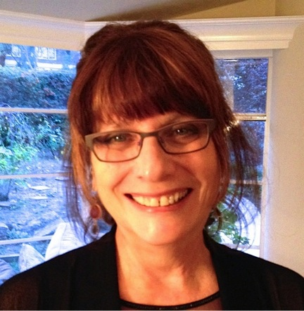
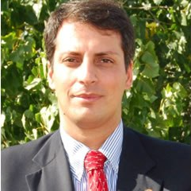
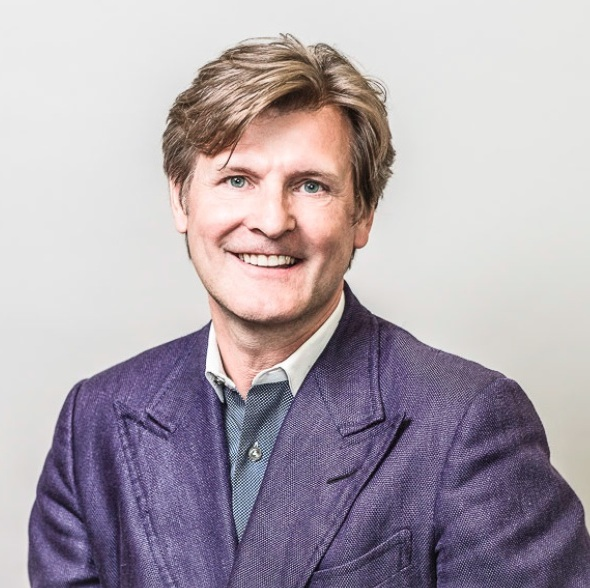
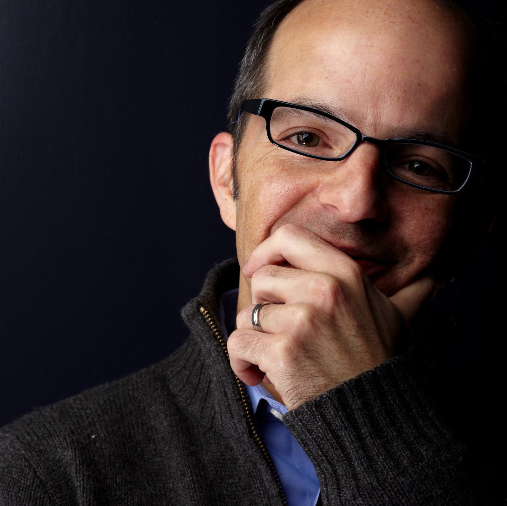

Mentors
Mentors from all over the world will be at the DesignShop. Whether facilitating workshops, floating around, or sitting with teams during "office hours", our mentors are here to assist and collaborate with students.
Matthew Malone
Secretary of EducationThe Commonwealth of Massachusetts
Doris Sommer
Director of the Cultural Agents InitiativeHarvard University

Ed Moriarty
InstructorThe Edgerton Center

Shelley Goldman
Professor, StanfordResearch in Education and Design Lab
Natali Kuldell
Founder; Professor in Bio EngineeringThe BioBuilder Educational Foundation; MIT

Eric Rosenbaum
Co-Inventor/Co-FounderMakey Makey

José Carlos Quadrado
Outgoing PresidentInt’l Federation of Engineering Education Societies

Saeed Arida
Chief Excitement OfficerNuVu Studios
Robert Vieth
K-12 Outreach CoordinatorMIT Edgerton Center

David Wallace
Professor in Mechanical EngineeringMIT
Jeffrey Sanchez
RepresentativeCommonwealth of MA

Janusz Koziński
Fouding DeanLassonde School of Engineering, York University

Nell O'Donell
Doctoral StudentHarvard Graduate School of Education
Hakan Satiroglu
Co-FounderLearnLaunch
Brian Bernert
Managing DirectorLearnLaunch

Rey Junco
Associate ProfessorPurdue University
Josh Sheldon
Educational TechnologistMIT Scheller Teacher Education Program

Jessica Huang
InstructorMIT D-Lab
Stefano Chinosi
Chief Innovation OfficerNewton Public Schools
Alban Cobi
Technical InstructorMIT Edgerton Center